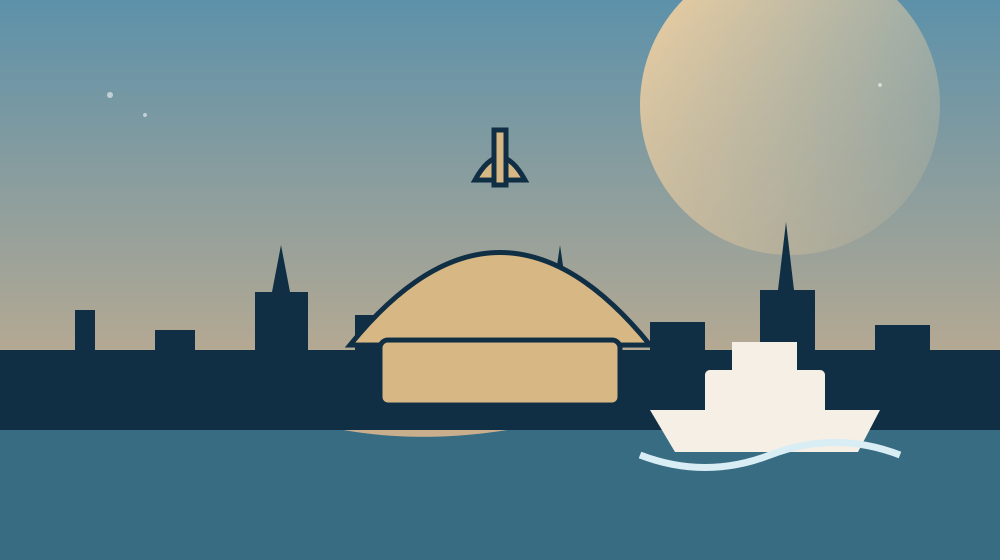

A practical, visually rich guide designed around your stay at the Dersaadet Hotel and your transition to Viking Vesta.
Recommendations organized by moment, neighborhood and energy level.
Hotel-centered orientation, Old City sequence and embarkation routing.
Transit, money, etiquette, heat, crowds and useful language.